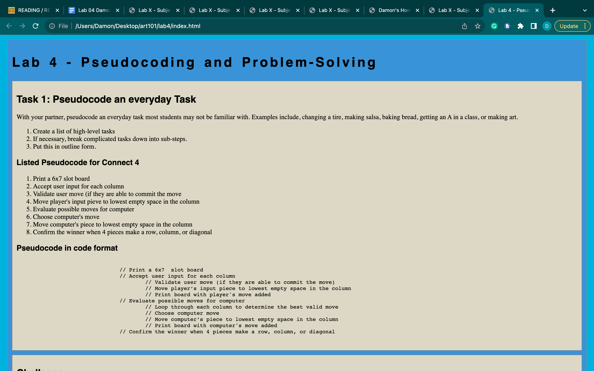

Lab 4 - Pseudocoding and Problem-Solving
Task 1: Pseudocode an everyday Task
With your partner, pseudocode an everyday task most students may not be familiar with. Examples include, changing a tire, making salsa, baking bread, getting an A in a class, or making art.
- Create a list of high-level tasks
- If necessary, break complicated tasks down into sub-steps.
- Put this in outline form.
Listed Pseudocode for Connect 4
- Print a 6x7 slot board
- Accept user input for each column
- Validate user move (if they are able to commit the move
- Move player's input pieve to lowest empty space in the column
- Evaluate possible moves for computer
- Choose computer's move
- Move computer's piece to lowest empty space in the column
- Confirm the winner when 4 pieces make a row, column, or diagonal
Pseudocode in code format
// Print a 6x7 slot board
// Accept user input for each column
// Validate user move (if they are able to commit the move)
// Move player’s input piece to lowest empty space in the column
// Print board with player's move added
// Evaluate possible moves for computer
// Loop through each column to determine the best valid move
// Choose computer move
// Move computer’s piece to lowest empty space in the column
// Print board with computer's move added
// Confirm the winner when 4 pieces make a row, column, or diagonal
Challenge
For this lab, my partner and I have not faced any challenges.
Problems
No problems emerged from this lab.
Results
The results are in the form of the Pseudocode listed above and screenshots provided below.
Screenshots
Screenshot of final published Lab 4 page.
